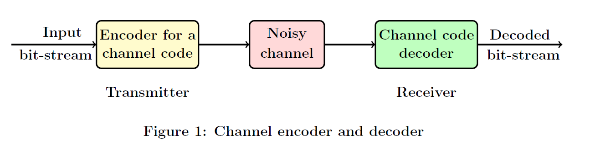
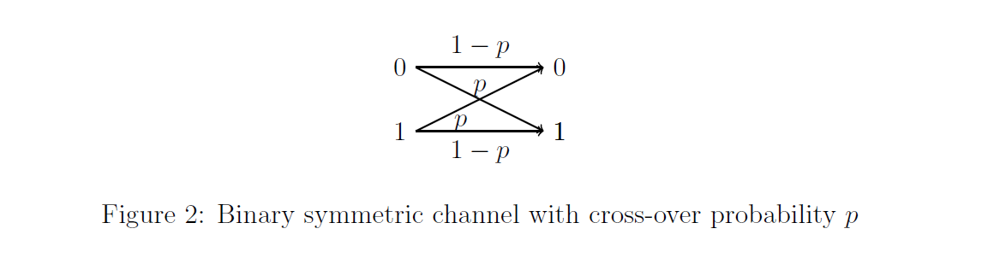
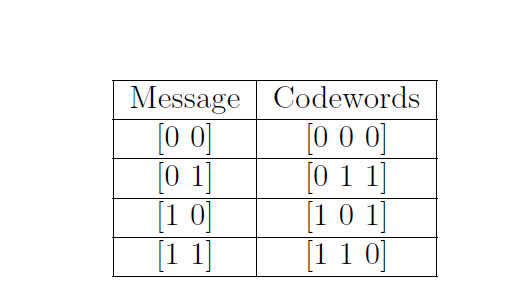

Linear Block Codes
Theory
The theory associated with Experiment-1 is divided into two parts:
(1) Preliminaries
(2) Linear block codes
1. Preliminaries
This section will introduce some preliminaries about finite fields, binary arithmetic, and vector spaces that are relevant to Experiment-1. For a detailed discussion of the topics, please refer [1, Ch. 2] and [2, Ch. 1]. We shall discuss the following topics:
Introduction to finite fields and binary arithmetic.
Vector space spanned by the given set of vectors.
1.1 Introduction to finite fields and binary arithmetic
For all the experiments considered in this virtual lab, we consider vectors and matrices that are defined over a finite field. In order to define a finite field, we need to first define a "binary operation", which is provided next.
Definition 1 (Binary operation): Let $\mathbb{F}$ be a set of elements. A binary operation $*$ is a rule that assigns to each pair of elements $a, b \in \mathbb{F}$ a uniquely defined third element $c = a * b \in \mathbb{F}$.
For example, consider the set of real numbers, denoted by $\mathbb{R}$. It can be verified that the addition operation defined for real numbers is a binary operation.
In order to define a field, consider a set $\mathbb{F}$ on which two binary operations called addition $(+)$ and multiplication $(\cdot)$ are defined. For the given ${\mathbb{F}, +, \cdot}$,
a definition of the field is given below.
Definition 2 (Field): ${\mathbb{F}, +, \cdot}$ is said to be a field if satisfies the following axioms:
Associativity of $(+)$ and $(\cdot)$: Elements $a, b, c \in \mathbb{F}$ satisfy $a + (b + c) = (a + b) + c$ and $a \cdot (b \cdot c) = (a \cdot b) \cdot c$.
Commutativity of $(+)$ and $(\cdot)$: Elements $a, b, c \in \mathbb{F}$ satisfy $a + b = b + a$ and $a \cdot b = b \cdot a$.
Distributivity of multiplication over addition: Elements $a, b, c \in \mathbb{F}$ satisfy $a \cdot (b + c) = (a \cdot b) + (a \cdot c)$.
Additive identity: There exist an element $0 \in \mathbb{F}$ such that $a + 0 = a$.
Multiplicative identity: There exist an element $1 \in \mathbb{F}$ such that $a \cdot 1 = a$ and $1 \neq 0$.
Additive inverses: For every $a \in \mathbb{F}$, there exists an element in $\mathbb{F}$, denoted by $-a$, called the additive inverse of $a$, such that $a + (-a) = 0$.
Multiplicative inverses: For every $a \neq 0 \in \mathbb{F}$, there exists an element in $\mathbb{F}$, denoted by $a^{-1}$ or $1/a$, called the multiplicative inverse of $a$, such that $a \cdot a^{-1} = 1$.
It can be verified that the set of real numbers $\mathbb{R}$ along with the addition and multiplication defined over real numbers is a field. However the set of integers alongwith the addition and multiplication defined over integers is not a field, since for integers multiplication inverses are not integers.
Let us now consider an example of a field with finite number of elements. Consider a set $\mathbb{F}_2$ = { 0, 1 } with the addition and multiplication operations for any $a, b \in \mathbb{F}_2$ defined as Equation (1)
$$
\begin{aligned}
0 + 0 = 0 \hspace{1in} 0 \cdot 0 &= 0\
0 + 1 = 1 \hspace{1in} 0 \cdot 1 &= 0\
1 + 0 = 1 \hspace{1in} 1 \cdot 0 &= 0 \hspace{1in} (1) \
1 + 1 = 0 \hspace{1in} 1 \cdot 1 &= 1.
\end{aligned}
$$
It can be verified that the set $\mathbb{F}_2$ alongwith the addition and multiplication operations defined in Eq. (1) is a field, since it satisfies the axioms of Definition 2. Such a field with finite number of elements is called as a finite field. For most of the experiments in this virtual lab, we will focus on the binary field $\mathbb{F}_2 = {0,1}$. We shall study more about finite fields in Experiment-6.
Except for Experiments 6 and 7, we will consider vectors and matrices defined over the binary field $\mathbb{F}_2$. Vectors are denoted by boldface letters and the components of a vector are denoted by lower case letters, e.g. the components of a vector $\mathbf{v} \in \mathbb{F}_2^n$ are denoted by $\mathbf{v} = \begin{pmatrix}v_1 & v_2 & \ldots & v_n \end{pmatrix}$, where each $v_i \in \mathbb{F}_2$ for $i = 1, 2, \ldots, n$. Vectors can either be considered as row vectors or columns vectors, depending on the context. Matrices are denoted by upper-case letters, e.g. consider a matrix M in $\mathbb{F}2^{m \times n}$ with $m$ rows and $n$ columns. The component of the matrix M corresponding to the $i^{th}$ row and $j^{th}$ column, for $1\leq i \leq m$ and $1\leq j \leq n$, is denoted by $M{ij}$.
We shall next define addition and multiplication operations for vectors and matrices that are defined over $\mathbb{F}_2$:
Addition of two vectors: The addition of two vectors $\mathbf{v}, \mathbf{w} \in \mathbb{F}_2^n$ consists of addition of their respective components defined according to Eq. (1), i.e., $$\begin{aligned} \mathbf{v} + \mathbf{w} =
\begin{bmatrix}
v_1 \ v_2 \ \vdots \ v_n
\end{bmatrix}
+ \begin{bmatrix}
w_1 \ w_2 \ \vdots \ w_n
\end{bmatrix}
=
\begin{bmatrix}
v_1 + w_1 \ v_2 +w_2 \ \vdots \ v_n+w_n
\end{bmatrix}.
\end{aligned}$$
For example,$\begin{bmatrix} 1 & 0 & 1\end{bmatrix} + \begin{bmatrix} 0 & 0 & 1\end{bmatrix} = \begin{bmatrix} 1 & 0 & 0\end{bmatrix}$.
Multiplication of a vector by a scalar: For a vector $\mathbf{v} \in \mathbb{F}_2^n$ and a scalar $a \in \mathbb{F}_2$, $a \cdot \mathbf{v}$ is given by $$ \begin{align*} a \cdot \mathbf{v} =
a \cdot \begin{bmatrix} v_1 \ v_2 \ \vdots \ v_n\end{bmatrix}
\begin{bmatrix} a \cdot v_1 \ a \cdot v_2 \ \vdots \ a \cdot v_n
\end{bmatrix}, \end{align*}$$ where the operation $a \cdot v_i$ for $i = 1, 2, \ldots, n$ is performed according to Eq. (1).Multiplication of a vector and a matrix:For a vector $\mathbf{v} \in \mathbb{F}_2^n$ and a matrix $M \in \mathbb{F}_2^{n \times m}$, $\mathbf{v} \cdot M$ is given by
$$
\begin{align} \mathbf{v} \cdot M &= \begin{bmatrix}v_1 & v_2& \ldots& v_n\end{bmatrix} \cdot \begin{bmatrix} M_{11} & M_{12} & \ldots& M_{1m} \ M_{21} & M_{22} & \ldots& M_{2m} \ \vdots \ M_{n1} & M_{n2} & \ldots& M_{nm} \end{bmatrix} \ &= \begin{bmatrix} v_1 \cdot M_{11} + v_2 \cdot M_{12} + \ldots + v_n \cdot M_{1m} \ v_1 \cdot M_{21} + v_2 \cdot M_{22} + \ldots + v_n \cdot M_{2m} \ \vdots \ v_1 \cdot M_{n1} + v_2 \cdot M_{n2} + \ldots + v_n \cdot M_{nm} \end{bmatrix}, \end{align} $$ where note that each component wise addition and multiplication is performed according to Eq. (1). Consider the following example.
$$ \begin{align*}
\mathbf{v} \cdot M &=
\begin{bmatrix}1 & 0& 1\end{bmatrix} \cdot \begin{bmatrix} 0 & 0 & 1& 1 \ 0 & 1 & 1& 0 \ 1 & 0 & 1& 1 \end{bmatrix}
&= \begin{bmatrix} 1 & 0 & 0 & 0 \end{bmatrix}. \end{align*} $$
1.2 Vector space spanned by the given set of vectors
In this section, we shall provide preliminaries about vector space spanned the given set of finite number of vectors, subspace of a vector space, linearly independent vectors, basis of a vector space, dimension of a vector space. Towards defining the vector space spanned by the given set of vectors, we first define linear combination of the given set of vectors and scalars.
Definition 3 _(Linear combination): The linear combination of the given set of vectors $\mathbf{v}_1 , \mathbf{v}_2, \ldots, \mathbf{v}_m \in \mathbb{F}_2^n$ and the corresponding set of scalars $a_1, a_2, \ldots, a_m \in \mathbb{F}2$ is defined as a vector $\mathbf{v}$ obtained as
$
\begin{align*}
\mathbf{v} = a_1\mathbf{v}_1 + a_2\mathbf{v}_2+ \ldots + a_m\mathbf{v}_m.
\end{align*}
$
For example, the linear combination of
$\mathbf{v}_1 = \begin{bmatrix} 1 & 1 & 0\end{bmatrix}, \mathbf{v}_2 = \begin{bmatrix} 0 & 1 & 0\end{bmatrix}, \mathbf{v}_3 = \begin{bmatrix} 1 & 1 & 1\end{bmatrix} \in \mathbb{F}_2^3$
and the corresponding set of scalars $a_1=0, a_2 = 1, a_3 = 0 \in \mathbb{F}_2$ is equal to $\begin{bmatrix} 0 & 1 & 0\end{bmatrix}$.
We shall next provide the definition of a vector space spanned by the given set of vectors.
Definition 4 _(Vector space spanned the given set of vectors):The vector space $V$ spanned by the vectors $\mathbf{v}_1 , \mathbf{v}_2, \ldots, \mathbf{v}_m \in \mathbb{F}2^n$ is defined as $$ \begin{align*} V =\Big{ \mathbf{v} \in \mathbb{F}_2^n \Big| \mathbf{v} = a_1\mathbf{v}_1 + a_2\mathbf{v}_2+ ... + a_m\mathbf{v}_m \hspace{0.1cm} \textit{for some scalars} \hspace{0.1cm} a_1, a_2, ..., a_m \in \mathbb{F}_2 \Big}. \end{align*} $$ This vector space $V$ is also called as the span of the vectors $\mathbf{v}_1 , \mathbf{v}_2, \ldots, \mathbf{v}_m$, denoted by $\hspace{0.5in}$ $V = {span} {\mathbf{v}_1 , \mathbf{v}_2, \ldots, \mathbf{v}_m}$.
Note that a vector space is essentially the set of all possible linear combinations of the given set of vectors. Let us consider some examples for vector spaces.
Example-1: It can be verified that $\mathbb{F}_2^4$ is a vector space spanned by the following set of vectors $ \begin{align*}
\mathbf{F}_2^4 = \hspace{0.05in}{span} {\mathbf{e}_1 , \mathbf{e}_2, \mathbf{e}_3, \mathbf{e}_4} = \hspace{0.05in}{span} \left{ \begin{bmatrix} 1 \ 0 \ 0 \ 0 \end{bmatrix}, \begin{bmatrix} 0 \ 1 \ 0 \ 0 \end{bmatrix}, \begin{bmatrix} 0 \ 0 \ 1 \ 0\end{bmatrix}, \begin{bmatrix} 0 \ 0 \ 0 \ 1 \end{bmatrix} \right} \hspace{1.4cm} (2) \end{align*} $Example-2: For any integer $n$, it can be verified that $\mathbb{F}_2^n$ is a vector space.
Example-3: The vector space spanned by the vectors $\mathbf{v}_1 = \begin{bmatrix} 1 & 0 & 1 \end{bmatrix}, \mathbf{v}_2 = \begin{bmatrix} 0 & 0 & 1 \end{bmatrix}$ and $\mathbf{v}_3 = \begin{bmatrix} 0 & 1 & 0 \end{bmatrix}$ is given by $$ \begin{align*} V = \hspace{0.05in}{span} {\mathbf{v}_1 , \mathbf{v}_2, \mathbf{v}_3} = \left{ \begin{bmatrix} 0 \ 0 \ 0 \end{bmatrix}, \begin{bmatrix} 1 \ 0 \ 0 \end{bmatrix}, \begin{bmatrix} 0 \ 1 \ 0 \end{bmatrix}, \begin{bmatrix} 0 \ 0 \ 1 \end{bmatrix}, \begin{bmatrix} 1 \ 0 \ 1 \end{bmatrix}, \begin{bmatrix} 1 \ 1 \ 0 \end{bmatrix}, \begin{bmatrix} 0 \ 1 \ 1 \end{bmatrix}, \begin{bmatrix} 1 \ 1 \ 1 \end{bmatrix} \right} \hspace{0.3cm} (3) \end{align*} $$ Note that $V = \mathbf{F}_2^3$ since it consists of all possible vectors in $\mathbf{F}_2^3$.
Example-4: Consider the vector space spanned by
the vectors $\mathbf{v}_1$ and $\mathbf{v}_2$ defined in Example-3. It is given by $ \begin{align*} W\hspace{0.3cm} = \hspace{0.3cm}{span}{\mathbf{v}_1, \mathbf{v}_2} = \left{ \begin{bmatrix} 0 \ 0 \ 0 \end{bmatrix}, \begin{bmatrix} 1 \ 0 \ 1 \end{bmatrix}, \begin{bmatrix} 0 \ 0 \ 1 \end{bmatrix}, \begin{bmatrix} 1 \ 0 \ 0 \end{bmatrix} \right} \hspace{3cm} (4) \end{align*} $
We shall next define a subspace of a vector space.
Definition 5 (Subspace): A subspace of a vector space is a nonempty subset that satisfies the requirements for a vector space.
For the examples (Example-3 and 4) mentioned above, $W=\hspace{0.001in}{span}{\mathbf{v}_1, \mathbf{v}_2}$ is a subspace of $V=\hspace{0.001in}{span}{\mathbf{v}_1, \mathbf{v}_2, \mathbf{v}_3}$.
Definition 6_(Linear independence): A given set of vectors $\mathbf{v}_1 , \mathbf{v}_2, \ldots, \mathbf{v}_m \in \mathbb{F}_2^n$ are said to be independent if and only if $a_1\mathbf{v}_1 + a_2\mathbf{v}_2+ \ldots + a_m\mathbf{v}m = \mathbf{0}$ can happen only when $a_1 = a_2 = \ldots = a_m = 0$.
For example, it can be verified that the vectors $\mathbf{v}_1 = \begin{bmatrix} 1 & 0 & 1 \end{bmatrix}, \mathbf{v}_2 = \begin{bmatrix} 0 & 0 & 1 \end{bmatrix}$ and $\mathbf{v}_3 = \begin{bmatrix} 0 & 1 & 0 \end{bmatrix}$ are linearly independent since $a_1\mathbf{v}_1 + a_2\mathbf{v}_2+ a_3\mathbf{v}_3$ gives an all-zero vector only when we choose $a_1=a_2=a_3=0$. Whereas the vectors $\mathbf{v}_1 = \begin{bmatrix} 1 & 0 & 1 \end{bmatrix}, \mathbf{v}_2 = \begin{bmatrix} 0 & 0 & 1 \end{bmatrix}$ and $\mathbf{v}_3 = \begin{bmatrix} 1 & 0 & 0 \end{bmatrix}$ are linearly dependent since $\mathbf{v}_1 + \mathbf{v}_2+ \mathbf{v}_3 = \mathbf{0}$.
Finally, we shall define basis of a vector space and dimension of a vector space.
Definition 7 (Basis of a vector space): A basis for a vector space $V$ is a set of vectors having two properties at once:
- The vectors are linearly independent
- They span the space $V$
For example consider the vector space $V = \mathbb{F}_2^3$. For this vector space, the set of vectors $\mathbf{v}_1, \mathbf{v}_2, \mathbf{v}_3$ given in Example-3 is a basis. However the set of vectors $\mathbf{w}_1 = \begin{bmatrix} 1 & 0 & 0 \end{bmatrix}, \mathbf{w}_2 = \begin{bmatrix} 1 & 0 & 1 \end{bmatrix},\mathbf{w}_3 = \begin{bmatrix} 0 & 1 & 0 \end{bmatrix}, \mathbf{w}_4 = \begin{bmatrix} 1 & 1 & 1 \end{bmatrix}$ is not a basis for the vector space $\mathbb{F}_2^3$ since they are not linearly independent. Further, the set of vectors ${\mathbf{w}_1, \mathbf{w}_2}$ is not a basis for $\mathbb{F}_2^3$ since span ${\mathbf{w}_1, \mathbf{w}_2} \neq \mathbb{F}_2^3$.
Note that a basis is not unique. The given vector space can have more that one basis. Can you find one more basis for the vector space $\mathbb{F}_2^3$ (Hint: See Eq (2))? Note that the number of vectors in any two bases will remain the same. This leads to the dimension of a vector space.
Definition 8 (Dimension of a vector space): The dimension of a space is the number of vectors in every basis.
For example, the dimension of the vector space $\mathbb{F}_2^3$ is equal to $3$ since the set of vectors $\mathbf{v}_1, \mathbf{v}_2, \mathbf{v}_3$ given in Example-3 is a basis for $\mathbb{F}_2^3$. Dimension of the vector space $W$ defined in Example-4 is equal to $2$ since ${\mathbf{v}_1, \mathbf{v}_2}$ is a basis of the vector space $W$.
2. Linear block codes

Channel codes (or error correcting codes) are used in any digital communication system to provide a reliable communication over a noisy communication channel. Figure 1 shows a part of a digital communication system focusing on the channel encoder-decoder (refer [1, Ch. 1] for a detailed description of a digital communication system). Suppose the transmitter wants to send a bit-stream over a noisy communication channel. A communication channel may corrupt this bit-stream.
To combat these errors introduced by the channel, a channel encoder is used at the transmitter. The channel encoder adds redundant bits to this input bit-stream that help the receiver to recover (decode) the corrupted bit-stream.
In Part-2 of Experiment-1, we shall introduce binary block channel codes, referred to as block codes from now on. We shall provide the definition of block codes and then
consider a subclass of block codes, linear block codes, that satisfy the linearity property. We shall introduce two simple yet important families of block codes, repetition (REP) and single parity check (SPC) codes. Through examples of REP and SPC codes, we shall demonstrate how channel codes can be used to combat the errors introduced the noisy communication channel. For a detailed discussion of the topics, please refer [1,3].
In the remaining part, we shall discuss the following topics:
Introduction to linear block codes
Repetition (REP) codes
Single parity check (SPC) codes
2.1 Introduction to linear block codes
Recall that $\mathbb{F}_2^n$ denotes the vector space of all $n$-tuples over the finite field $\mathbb{F}_2$. Basics of finite fields and vector spaces are provided in Section 1.
For block codes, the input bit-stream is first divided into vectors of length $k$. Thus the input to a channel encoder is a sequence of vectors of length $k$, also termed as message sequence. Let $\mathbf{m} \in \mathbb{F}_2^k$ denotes one such $k$-length message vector. To each message $\mathbf{m}$, a block encoder assigns a vector $\mathbf{v} \in \mathbb{F}_2^n$ of length $n > k$, according to \textit{some rule}. This vector $\mathbf{v}$ is termed as the \textit{codeword} corresponding to message $\mathbf{m}$. Suppose there are $M$ distinct messages. A definition of a block code is given below.
Definition 9 _(Block code $\mathcal{C}(n, M)$): Consider any map (rule) that assigns a codeword vector $\mathbf{v} \in \mathbb{F}_2^n$ to the given message vector $\mathbf{m} \in \mathbb{F}2^k$, where $n > k$. Then the set of codewords corresponding to the given set of $M$ distinct messages is termed as a block code (or a codebook). The parameter $n$ is called as the length of the code.
In general note that, the map associated with the a block code need not be one-to-one, i.e., the codewords corresponding to distinct messages need not be distinct. However for the purpose of this lab, we shall focus on the maps where there is a one-to-one correspondence between a message and codeword.
Let us consider an example for a block code. Let $\left {\begin{bmatrix} 0 & 1\end{bmatrix}, \begin{bmatrix} 1 & 1\end{bmatrix} \right}$ be the set of distinct messages that a transmitter wishes to transmit. Consider the map that assigns the vector $\begin{bmatrix} 0 & 1 & 1 & 1 \end{bmatrix}$ to the message $\begin{bmatrix} 0 & 1\end{bmatrix}$ and the vector $\begin{bmatrix} 1 & 1 & 0 & 1 \end{bmatrix}$ to the message $\begin{bmatrix} 1 & 1\end{bmatrix}$. Then the vectors $\begin{bmatrix} 0 & 1 & 1 & 1 \end{bmatrix}$ and $\begin{bmatrix} 1 & 1 & 0 & 1 \end{bmatrix}$ are termed as the codewords corresponding to the messages $\begin{bmatrix} 0 & 1\end{bmatrix}$ and $\begin{bmatrix} 1 & 1\end{bmatrix}$ respectively and $\mathcal{C}(4,2) = \left{\begin{bmatrix} 0 & 1 & 1 & 1 \end{bmatrix},\begin{bmatrix} 1 & 1 & 0 & 1 \end{bmatrix} \right}$ is the corresponding codebook or block code.
Note that a binary vector $\mathbf{m} \in \mathbb{F}_2^k$ can take $2^k$ possible distinct values. For linear block codes, all possible $2^k$ vectors in $\mathbb{F}_2^k$ comprises the set of distinct messages. However, for linear block codes the map assigning messages to codeword cannot be arbitrary. For linear block codes, as the name suggests, this map should be linear, i.e., it should satisfy the property that addition of any two codewords should also be a codeword. A definition of a linear block code is given below.
Definition 10 _(Linear block code $\mathcal{C}(n,k)$): A block code of length $n$ and $2^k$ codewords is called as a linear block code if and only if its $2^k$ codewords form a $k$-dimensional subspace of the vector space $\mathbb{F}2^n$. The parameters $n$ and $k$ are called as the length and dimension of a linear block code respectively.
Let us consider an example for a linear block code for $k=2$. For $k=2$, the set of messages will be $\left {\begin{bmatrix} 0 & 0\end{bmatrix}, \begin{bmatrix} 0 & 1\end{bmatrix}, \begin{bmatrix} 1 & 0\end{bmatrix}, \begin{bmatrix} 1 & 1\end{bmatrix} \right}$. Consider the map that assigns codewords $\left {\begin{bmatrix} 0 & 0 & 0\end{bmatrix}, \begin{bmatrix} 0 & 1 & 1\end{bmatrix}, \begin{bmatrix} 1 & 0 & 1\end{bmatrix}, \begin{bmatrix} 1 & 1 & 0\end{bmatrix} \right}$ to these messages respectively. It can be verified that that this map is a linear and the set of codewords form a $2$-dimensional subspace of $\mathbb{F}_2^3$.
We shall next define the Hamming weight of a vector $\mathbf{v} \in \mathbf{F}_2^n$ and the Hamming distance between any two vectors $\mathbf{v}_1$ and $\mathbf{v}_2$ in $\mathbb{F}_2^n$. These notions will be used to define the minimum distance of a block code.
Definition 11 _(Hamming weight of a vector): The Hamming weight of a vector $\mathbb{v} \in \mathbb{F}2^n$ is defined as the number of non-zero components in it.
Definition 12 _(Hamming distance $d_H(\mathbf{v}_1, \mathbf{v}_2)$ between vectors $\mathbf{v}_1$ and $\mathbf{v}_2$): The Hamming distance between vectors $\mathbf{v}_1$ and $\mathbf{v}_2$ in $\mathbb{F}2^n$ is defined as the number of position these two vectors differ from each other.
For example, the Hamming weight of the vector $\mathbf{v} = \begin{bmatrix} 1 & 0 & 0 & 1 & 1 \end{bmatrix} \in \mathbb{F}_2^5$ is equal to $3$. For the vectors $\mathbf{v}_1 = \begin{bmatrix} 1 & 0 & 0 & 1 & 1 \end{bmatrix} \hspace{0.1cm}{and}\hspace{0.1cm} \mathbf{v}_2 = \begin{bmatrix} 1 & 0 & 0 & 0 & 0 \end{bmatrix}$, the Hamming distance $d_H(\mathbf{v}_1, \mathbf{v}_2) = 2$. We shall next define the minimum distance of a block code.
Definition 13 (Minimum distance $d{min}$ of a block code $\mathcal{C}(n,M)$): The minimum distance $d_{min}$ of the given block code is defined as the minimum Hamming distance between any two codewords of the code, i.e.,
$
\begin{align*}
\hspace{1in}d{min} \coloneqq \min \left{ d_H(\mathbf{v}_1, \mathbf{v}_2) \hspace{0.1in}{ such \hspace{0.1in} that } \hspace{0.1in} \mathbf{v}_1, \mathbf{v}_2 \in \mathcal{C}(n,M) \right}.
\hspace{1in}
\end{align*}
$
For the linear blocks it can be proved that, the minimum distance is equal the minimum Hamming weight of a non-zero codeword. A linear block code of length $n$, dimension $k$, and minimum distance $d_{min}$ is denoted by $\mathcal{C}(n,k, d_{min})$.
We shall next discuss two families of linear block codes; repetition and single parity check codes.
2.2 Repetition codes
Repetition codes are one of the simplest yet important class of linear block codes. For repetition codes we have $k=1$, i.e., a message can either be $0$ or $1$. For the repetition code of length $n$ (REP-$n$ code), as the name suggests, the message to be transmitted is repeated $n$ times. Thus the codewords corresponding to the messages $0$ and $1$ are $\begin{bmatrix} 0 & 0 & \ldots & 0 \end{bmatrix}$ and $\begin{bmatrix} 1 & 1 & \ldots & 1 \end{bmatrix}$ respectively. For example, the codewords of REP-$5$ are given by $\left{ \begin{bmatrix} 0 & 0 & 0 & 0 & 0 \end{bmatrix}, \begin{bmatrix} 1 & 1 & 1 & 1 & 1 \end{bmatrix}\right}$. Typically the length $n$ of the repetition code is chosen to be an odd integer since an odd length is suitable for majority logic decoding of repetition codes when the noise is introduced a binary symmetric channel of cross-over probability $p$, denoted by BSC($p$). A few preliminaries about the binary symmetric channel are summarized in Remark 1.
Remark 1 (Binary symmetric channel (BSC($p$))): In this remark, we shall describe how noise is modeled according to the binary symmetric channel. As shown in Figure 2 for BSC($p$), a transmitted bit is flipped independently with probability $p$.

_Without loss of generality we assume that $p < 1/2$, since when $p > 1/2$, one can first flip the entire received bit sequence and use the decoding algorithms developed for the the case when $p < 1/2$. For example, when a vector $\begin{bmatrix} 0 & 1 & 1\end{bmatrix}$ is transmitted over BSC$(p)$, the$ probability of receiving the vector $\begin{bmatrix} 1 & 1 & 0\end{bmatrix}$ is equal to $p^2(1-p)$ since the first and the third bits are flipped, whereas the second bit is not flipped. Note that a transmitted vector can get flipped to any vector in $\mathbb{F}2^n$.
We shall now describe majority logic decoding for repetition codes of odd lengths. First note that, a transmitted codeword can get flipped to any vector in $\mathbb{F}_2^n$ (see Remark 1). According to majority logic decoding, the received vector $\mathbf{y} \in \mathbb{F}_2^n$ is decoded as $1$ if the number of $1$'s are in it are in majority, otherwise it is decoded as $0$. For example, for REP-$3$ code, when received vector is $\mathbf{y} = \begin{bmatrix} 1 & 1 & 0\end{bmatrix}$, the decoded message is $1$, since the bit is in majority in this $\mathbf{y}$.
We shall next illustrate how repetition codes can help to correct some of the errors introduced by the BSC. Suppose the codeword $\begin{bmatrix} 1 & 1 & 1\end{bmatrix}$ is transmitted and the received vector is such that at most one of the bit is flipped. Then according to majority logic decoding, the decoded codeword will be $\begin{bmatrix} 1 & 1 & 1\end{bmatrix}$ and receiver is able to correct such errors. However, note that if more than two bits are flipped then the decoded codeword will be incorrect and receiver is not able to correct such error patterns. In the Experiment-3 we shall see that REP-$n$ code is able to correct all possible error patterns of weight less than or equal to $\lfloor \frac{n-1}{2}\rfloor$.
2.3 Single parity check codes
For the single parity check (SPC) codes of length $n$ we have $k=n-1$. The codeword corresponding to the message $\mathbf{m} = \begin{bmatrix} m_0 & m_1 & \ldots & m_{n-2}\end{bmatrix} \in \mathbf{F}2^{n-1}$ is given by $\mathbf{v} = \begin{bmatrix} m_0 & m_1 & \ldots & m{n-2}& p\end{bmatrix}$, where $p = m_0 + m_1 + \ldots + m_{n-2}$. For example for $(3,2)$ SPC code, the messages and the corresponding codewords are given below:

Let us now illustrate how SPC codes can be used for detection of some of the error patterns. If $\mathbf{v} = \begin{bmatrix}v_1 & v_2 & \ldots & v_n \end{bmatrix}$ is a codeword of $(n, n-1)$ SPC then it satisfies the parity check equation given below $ \begin{align*} v_1 + v_2 + \ldots + v_n = 0. \hspace{0.9cm} (5) \end{align*} $ The property of SPC codes given in Eq. (5) is used to for single bit error detection. Suppose the codeword $\mathbf{v} = \begin{bmatrix}v_1 & v_2 & \ldots & v_n \end{bmatrix}$ of $(n,n-1)$ SPC code is transmitted and the received vector is such that one of the bit is flipped. Then the received vector will not satisfy the parity check equation of Eq. (5). This will indicate that that an error has occurred. Note that this will not help to identity the location of the error. Eq. (5) will just help us to detect whether one-bit is flipped or not.
Note that Eq. (5) will not be useful if two bits are flipped, since the received vector will satisfy Eq. (5) when exactly two bits are flipped.